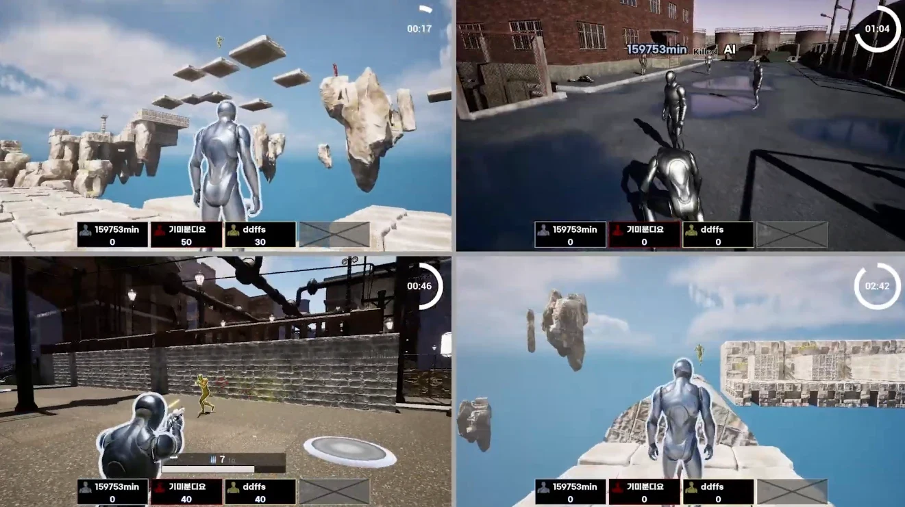
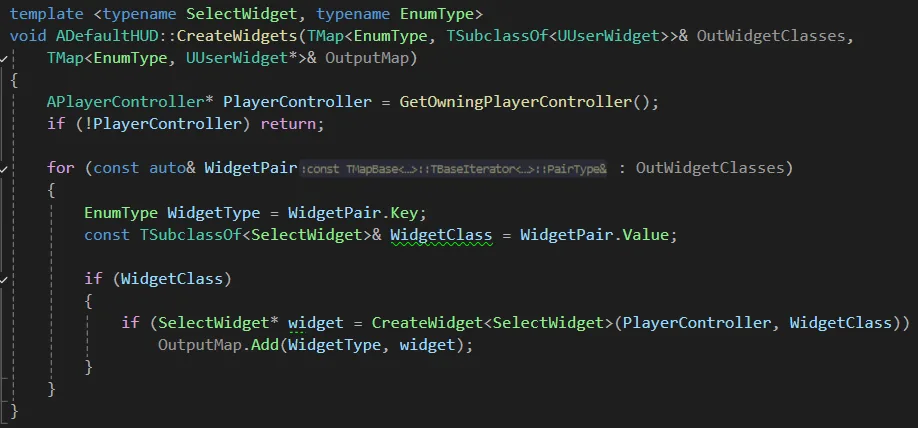

클라이언트만 늦게 넘어오던 레벨 이동
- 증상
- 로비에서 게임 맵으로 넘어갈 때 클라이언트들의 이동이 지연되었습니다.
- 해결
- Transition Map을 두고 Seamless Travel로 바꿔, 연결을 끊지 않고 레벨을 옮기게 했습니다.
- 결과
- 호스트와 클라이언트가 함께 다음 맵으로 넘어갑니다.
스팀 친구와 방을 만들어 여러 미니게임을 라운드제로 겨루는 멀티 파티 게임입니다.



게임 상태를 보는 쪽(HUD, 캐릭터 등)이 서로를 몰라도 되게, 상태가 바뀔 때 델리게이트로 알리게 했습니다.
OnGameStateTypeChanged 델리게이트를 정의합니다.void ADefaultGameState::ChangeGameType(EGameStateType InGameType)
{
EGameStateType prevGameType = GameStateType;
GameStateType = InGameType;
if (OnGameStateTypeChanged.IsBound())
OnGameStateTypeChanged.Broadcast(prevGameType, GameStateType);
}Add or Update Warp Target으로 Parkour Pos를 지정해 캐릭터를 움직입니다.